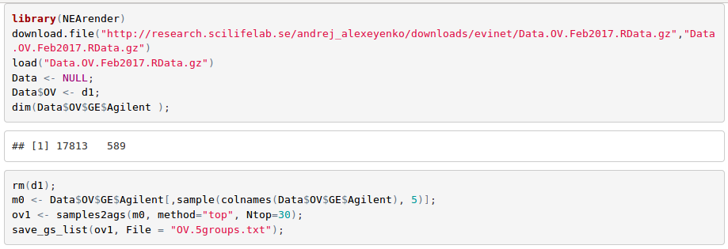
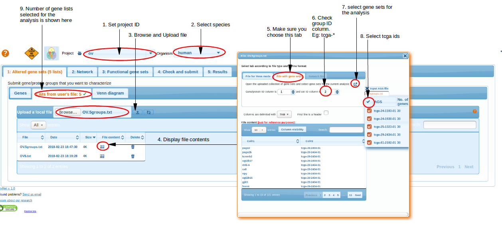
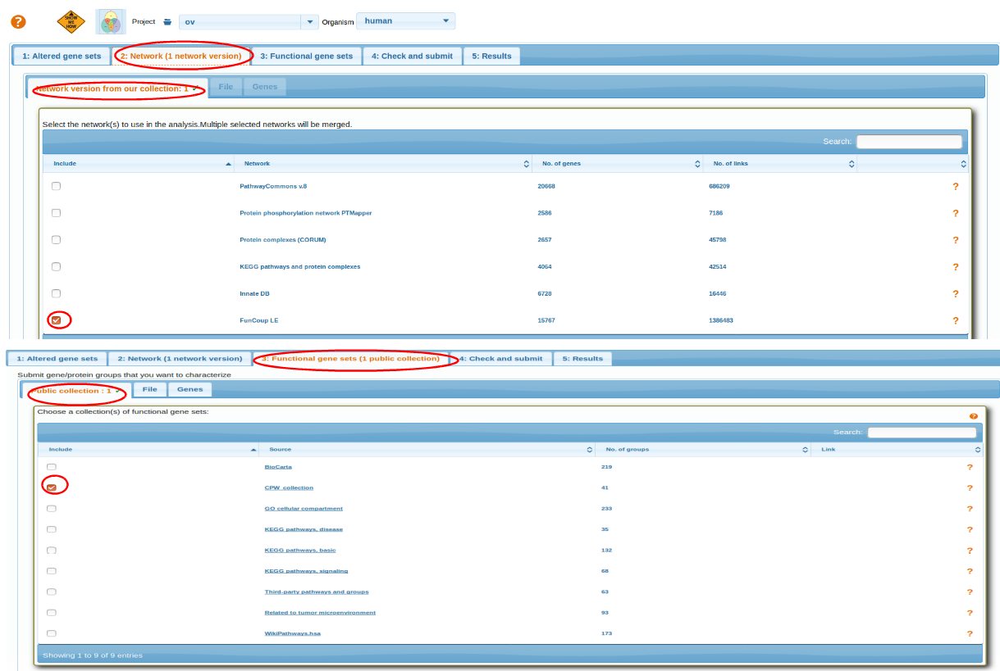
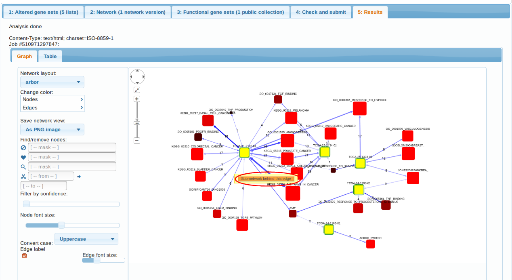
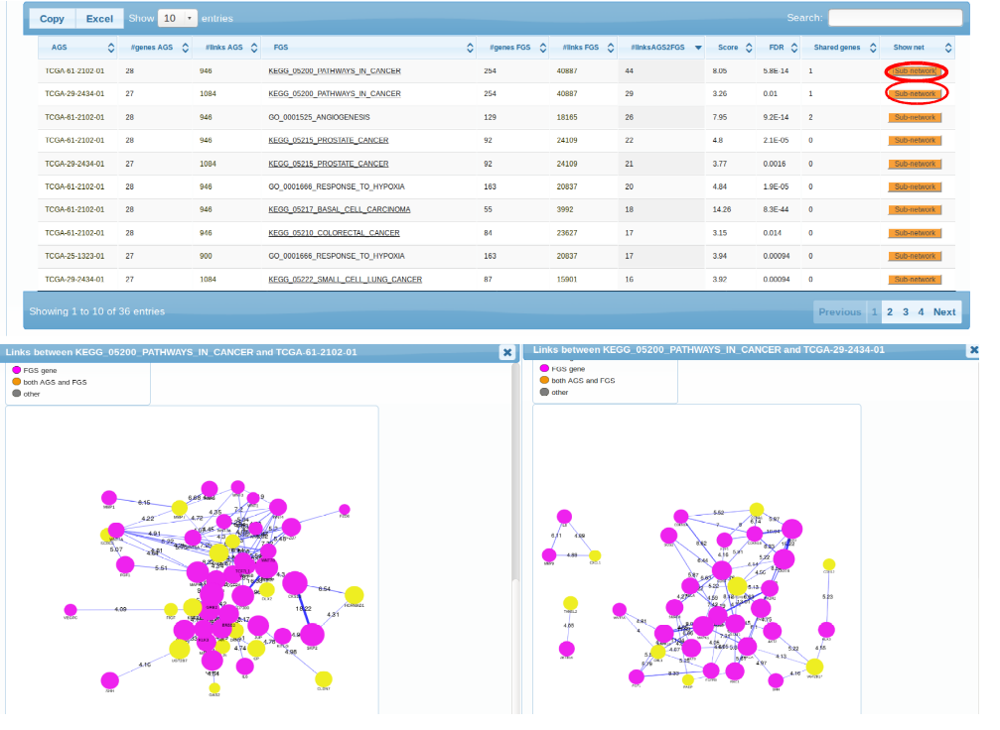

Exploration of transcriptome landscapes
- Generating AGS file using NEArender
- Upload AGS file
- Select Networks and Functional Gene Sets
- Results
Generating AGS file using NEArender
Cancer samples are known to be highly heterogeneous across patients. In order to characterize them, one can choose the strategy described in Alexeyenko et al., 2012: in each 'omics' sample, select top N genes by which it differs from the rest of the cohort. We can do that with e.g. following R code (see more details in tutorial "Using R package NEArender in data analysis pipelines")

Upload AGS file
We submit the obtained text file OV.5groups.txt using the Altered gene sets -> File -> Upload a local file to EviNet.
Here gene groups (list of tcga_* IDs) are submitted as input Altered Gene Sets to NEA.

Select Networks and Functional Gene Sets
Select a Network and then Functional Gene Sets. For more details go through: Selecting Network, Selecting Functional Genesets.
After selecting AGS,FGS and NW review the parameters before running analysis Check and Submit.

top
Results
The first observation we can make is that, indeed, the 5 transcriptomes differ in their
pathway patterns. TCGA-61-2102, TCGA-29-2424, TCGA-25-1323 is enriched in connections to multiple cancer pathways (which pretty much say ditto given the pathway overlap). TCGA-24-1103 could only be characterized by "Acidic switch". As possible next steps we could consider using another FGS collection, increasing the AGS sizes, or adding altered genes from other platforms (methylation, exome sequencing etc.). Note also the possibility to retrive a more detailed, gene-level view of each enrichment case. By clicking the orange buttons in either table or the graph, one can see the particular genes and edges behind the enrichment.

Subnetworks

top